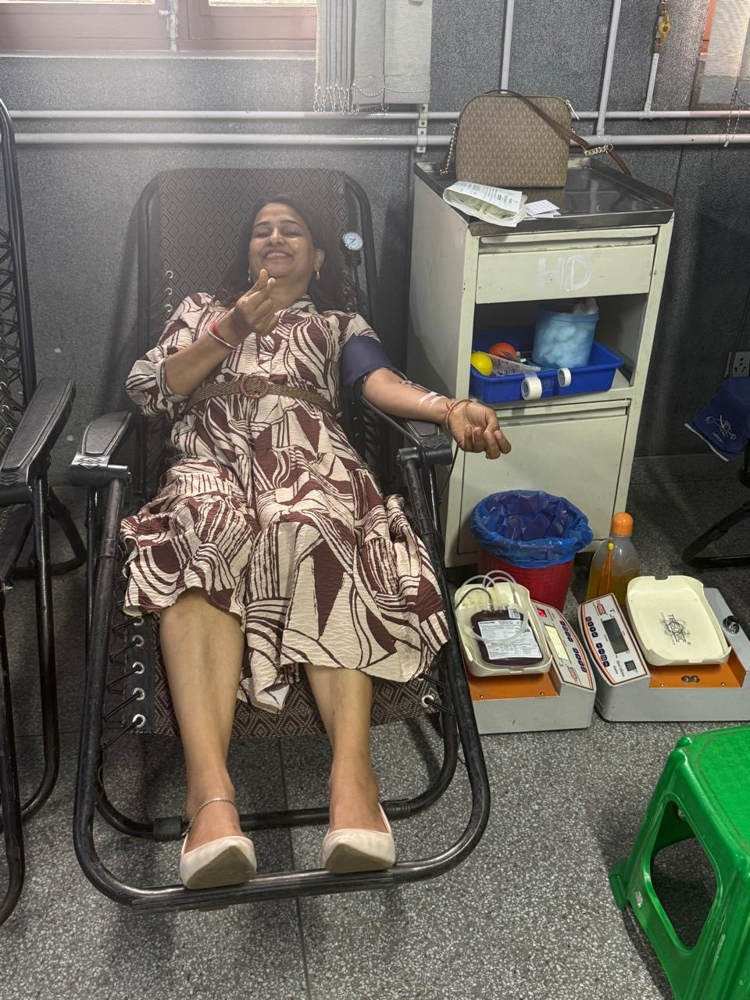
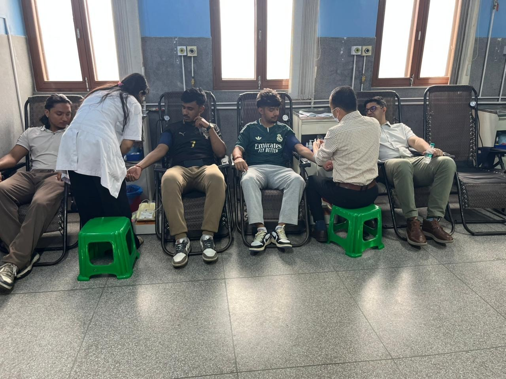
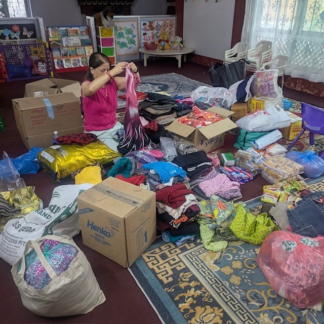
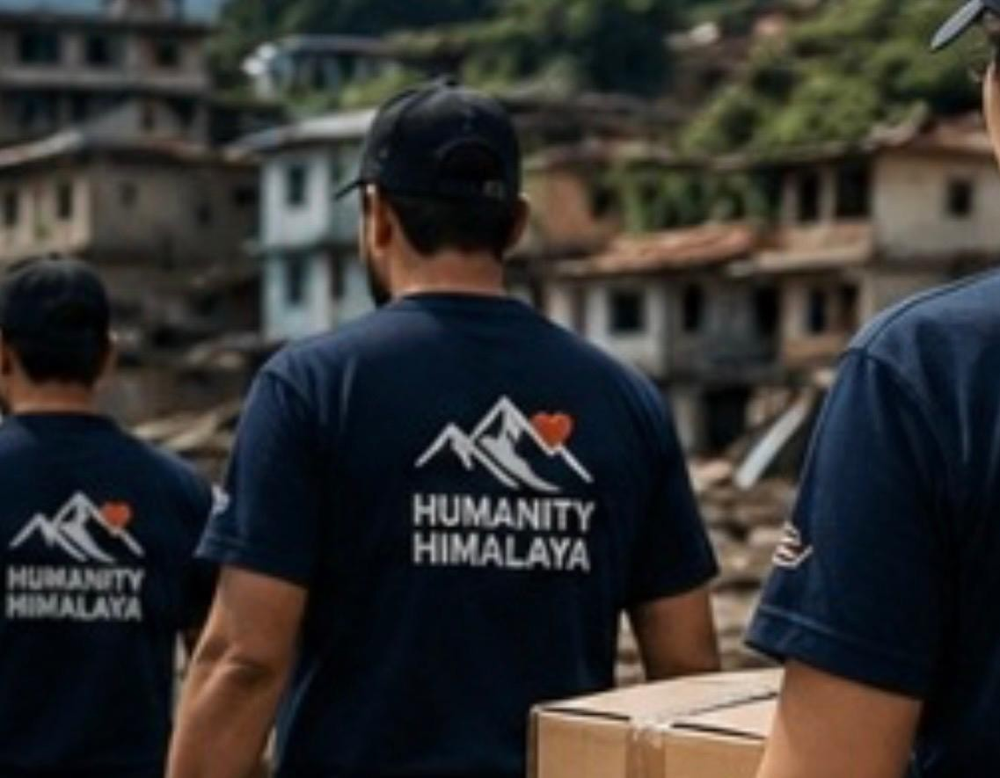
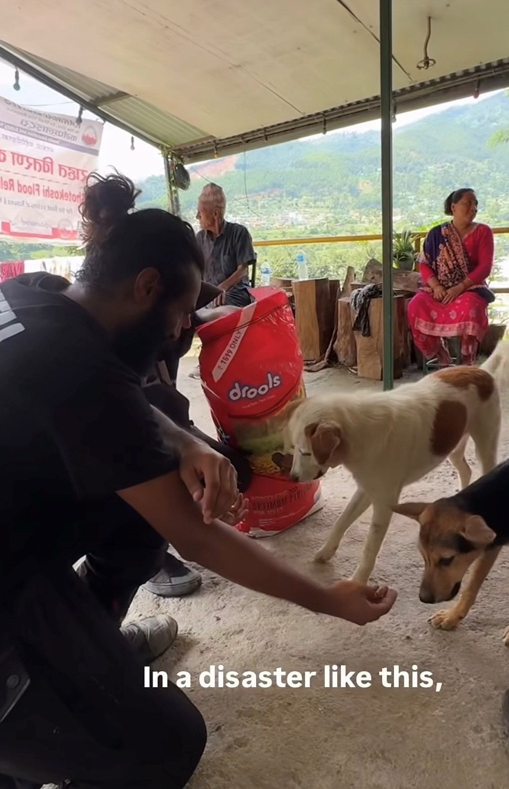

Our Work
We believe humanitarian action begins with compassion and becomes meaningful through action. Humanity Himalaya works to support people, families, communities, and animals affected by disasters, poverty, displacement, and other difficult circumstances.
Helping People Wherever Help Is Needed
Humanity Himalaya is committed to humanitarian service beyond any single country or community. Our goal is to respond to urgent needs while supporting dignity, recovery, resilience, and hope.
Our work may include emergency assistance following natural disasters, support for vulnerable families, access to essential supplies, community-based assistance, and initiatives that help people recover after a crisis.
We believe assistance should reach people with compassion, respect, transparency, and a focus on genuine need.
Disaster Relief
Supporting communities affected by floods, landslides, earthquakes, storms, fires, and other emergencies with essential humanitarian assistance.
Food & Essential Supplies
Helping individuals and families meet essential needs—including food, safe drinking water, clothing, shelter, hygiene supplies, household necessities, health-related support, educational resources, and other assistance needed to navigate hardship and rebuild their lives.
Recovery & Rebuilding
Supporting individuals and communities as they begin rebuilding their lives, homes, livelihoods, and sense of stability after a crisis.
Support for Vulnerable Families
Providing assistance to families and individuals experiencing severe hardship, displacement, loss, or other urgent humanitarian needs.
Animal Welfare
Recognizing that animals are also affected by disasters, we support compassionate rescue, protection, food, shelter, and emergency care when possible.
Community Volunteers
Working with volunteers and community members who are willing to give their time, skills, resources, and compassion to help others.
Our Work in Nepal
Nepal holds a special place in our humanitarian mission. When communities are affected by disaster, we believe help should reach people quickly, respectfully, and directly.
In response to emergencies such as the devastating 2026 floods, our volunteers and supporters can contribute through blood donation, collection and distribution of essential supplies, financial assistance, animal rescue, and other forms of humanitarian support.
Our approach is centered on people. We listen to the needs of affected communities and work to direct assistance toward those who need it most.

Giving Blood to Help Save Lives
During an emergency, injured people may require urgent medical treatment and blood. Our volunteers believe that one of the most direct ways to help is to give what we can.
Blood donation is a simple but powerful act of solidarity. Our volunteers participate in blood donation efforts to support people affected by emergencies and help strengthen the community's response when medical needs increase.
- Supporting emergency medical needs
- Encouraging community blood donation
- Standing with families during times of crisis

Volunteers Turning Compassion Into Action
Humanitarian work is not only about financial contributions. It is also about showing up, volunteering time, giving blood, organizing resources, and helping people when they are most vulnerable.
Our volunteers are part of a community that believes everyone can contribute something. A single act of generosity can become part of a much larger effort to protect lives and support recovery.


Collecting, Packing & Delivering Essential Supplies
After a disaster, families can lose access to the basic necessities of everyday life. Food, clothing, blankets, hygiene supplies, water, household items, and other essentials can become urgently needed.
Our volunteers help collect available resources, organize them, pack relief materials, and support distribution to affected people and families.
- Collecting donated goods
- Sorting and organizing supplies
- Packing emergency relief packages
- Supporting distribution to affected families
- Prioritizing urgent and essential needs

Protecting Animals When Disaster Strikes
Disasters do not affect humans alone. Dogs, cats, livestock, and other animals can be injured, trapped, displaced, or left without food and shelter.
Humanity Himalaya believes compassion should extend to animals as well. Where possible, our humanitarian efforts include helping rescue, protect, feed, and provide assistance to animals affected by emergencies.
- Helping animals in emergency situations
- Supporting food and basic care
- Helping animals reach safety
- Supporting compassionate community response
Helping Families Directly
Sometimes the most useful assistance is flexible assistance that allows a family to address its own most urgent needs.
Direct Financial Support
When appropriate and when resources allow, Humanity Himalaya provides financial assistance directly to affected individuals and families.
Direct assistance can help families address urgent needs that may not be fully met through standard relief packages.
- Emergency household needs
- Food and essential living expenses
- Temporary accommodation and recovery needs
- Urgent family expenses following a disaster
- Other verified humanitarian needs
Our goal is to treat people with dignity and provide assistance based on genuine need.
From Relief to Recovery
Humanitarian assistance should not end when the immediate emergency is over.
Rebuilding Lives
We seek to support families as they move from immediate survival toward stability and recovery.
Community Resilience
Strong communities are better able to prepare for, respond to, and recover from future emergencies.
Dignity & Respect
Every person receiving assistance deserves to be treated with respect, compassion, and dignity.
Responsible Giving
We aim to use donated resources responsibly and direct assistance toward meaningful humanitarian needs.
Be Part of the Work
Whether through volunteering, donating, sharing resources, or simply spreading awareness, every contribution can help us reach people and communities in need.
Donate Now